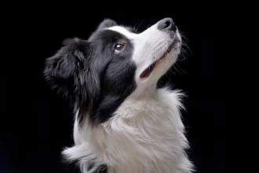
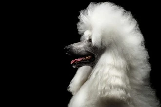
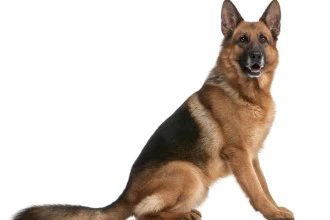
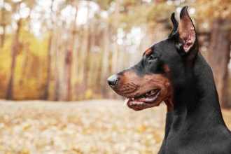

Топ-5 умных собак
В рейтинге самых умных пород собак участвует ТОП-5 по версии Корена. Собаки, попавшие в список, считаются самыми послушными. Однако способность действовать самостоятельно и мыслить нестандартно учитываются опосредованно. Поэтому свободолюбивые представители аборигенных пород, терьеры и охотничьи выбывают из соревнования досрочно.
Бордер-колли
Бордер-колли занимает первую строчку в рейтинге умных пород собак не случайно. Животное обладает исключительной проницательностью, аналитическим мышлением и физической выносливостью. И хотя во многом успехи в дрессировке обусловлены немалым трудолюбием питомца, не учитывать его умственные способности просто невозможно.
Пудель
Пудель – самая умная собака из группы декоративных. Благодаря высокому интеллекту, животное с азартом выполняет сложные комплексы упражнений и цирковые трюки, запоминает более 70 команд, читает по губам и предугадывает желания хозяина благодаря врожденной наблюдательности.
Немецкая овчарка
Немецкие овчарки – умные энергичные собаки с врожденным охранным инстинктом. Порода активно используется на службе в полиции и на таможне. Но благодаря относительно несложной дрессировке, собаку нередко заводят в качестве компаньона или домашнего сторожа.
Золотистый ретривер
Золотистый ретривер (голден ретривер) – одна из самых умных пород собак, популярная по всему миру. Устойчивая психика и жизнерадостный нрав делают собаку идеальным компаньоном, поводырем, охотником и спасателем.

Доберман
Доберман – элитная служебная собака для охраны, преследования и поиска. Однако сегодня это еще и самая умная порода собак из числа компаньонов
